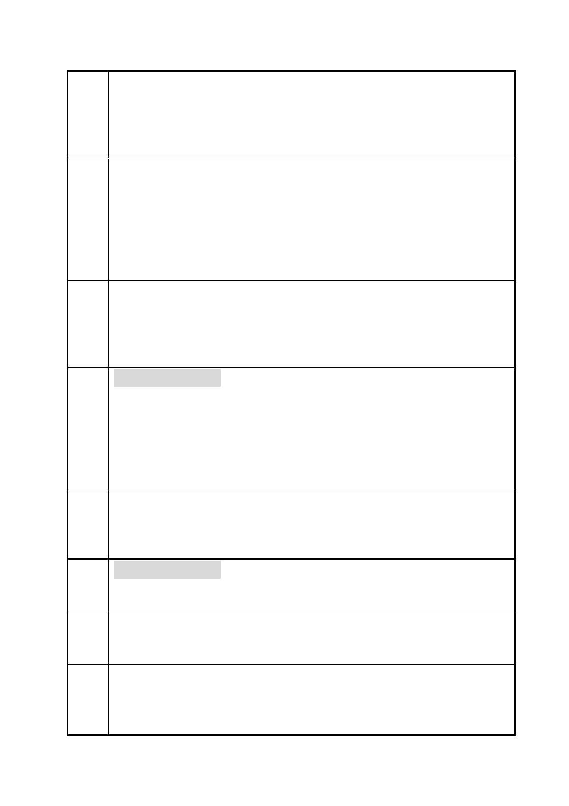

臺北市都市計畫委員會 公民或團體陳情意見綜理表
案
名
建議
辦法
一
陳情
理由
二
建議
辦法
二
陳情
理由
三
建議
辦法
三
「變更臺北市信義區逸仙段二小段 33 地號等 21 筆土地（原臺北機廠）
工業區為創意文化專用區、特定專用區、道路及綠地用地主要計畫案」
及「擬定臺北市信義區逸仙段二小段 33 地號等 21 筆土地（原臺北機
廠）創意文化專用區、特定專用區、道路及綠地用地細部計畫暨劃定
都市更新地區計畫案」
及藝文園區使用。目前，臺北市已經有美術館，全臺灣各地也有許多
美術館與藝文園區，卻無大型可展陳實體火車之鐵道博物館。臺北機
廠作為台灣現存最古老的鐵路修理工廠，本身之建物與產業遺產價值
世所公認，美術館與藝文園區可以另覓他地設立，但保留鐵道修理工
廠的文化資產卻只有此處可得，故本會基於全民文化資產不應透過此
都市計劃變更案轉化為創意文化園區招商或變成美術館，反對此項變
更。
基於保存珍貴鐵道文化資產的理由，反對市府將本區內重要的鐵道修
理廠房劃設為創意文化專用區，以及作為美術館與藝文園區使用。市
府應以文化資產保存法之高於都市計劃法位階，將本區劃設為「文化
資產保存區」，並退回重擬目前公告之細部計畫暨劃定都市更新地區
計畫。
特定專用區（一）
目前的市府計劃中，擬將位於計畫區東半側街廓，賦予較高強度之發
展，作為「商業購物、休閒娛樂、商務辦公、住宅等支援設施」之用。
此區與上述的臺北機廠核心區域為不可分割之一體，目前的規劃放寬
使用的限制，特別是允許作為「商業購物、休閒娛樂、商務辦公、住
宅」的開發。 此案一過，臺北機廠的重要鐵道文化資產與歷史廠房
將被商業化破壞。故本會反對此項變更案。
基於保存臺北機廠鐵道文化資產的完整性，反對此區放寬成為特定專
用區引入商業行為與住宅商辦等開發權限。市府應以文化資產保存法
高於都市計劃法位階，將本區劃設為「文化資產保存區」，並退回重
擬目前公告之細部計畫暨劃定都市更新地區計畫。
特定專用區（四）
為澡堂古蹟部分，建議配合上述兩區共同保存。
基於上述理由，反對目前市府將臺北機廠變更為創意文化專用區與各
特定專用區。於保存珍貴鐵道文化資產，並將此臺灣最重要的鐵路修
理廠房改造為鐵道博物館，請台北市府退回此一都市計劃變更計畫，
並將此區以文化資產保存法之位階，設為「文化資產保存區」，以朝
第 11 頁/共 154 頁